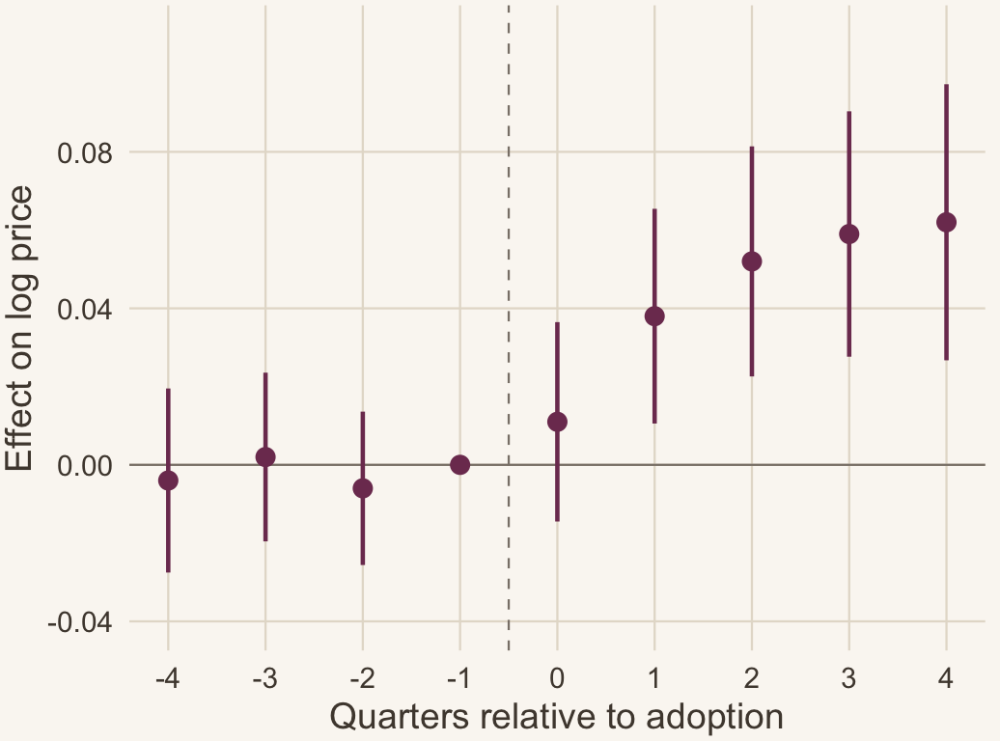
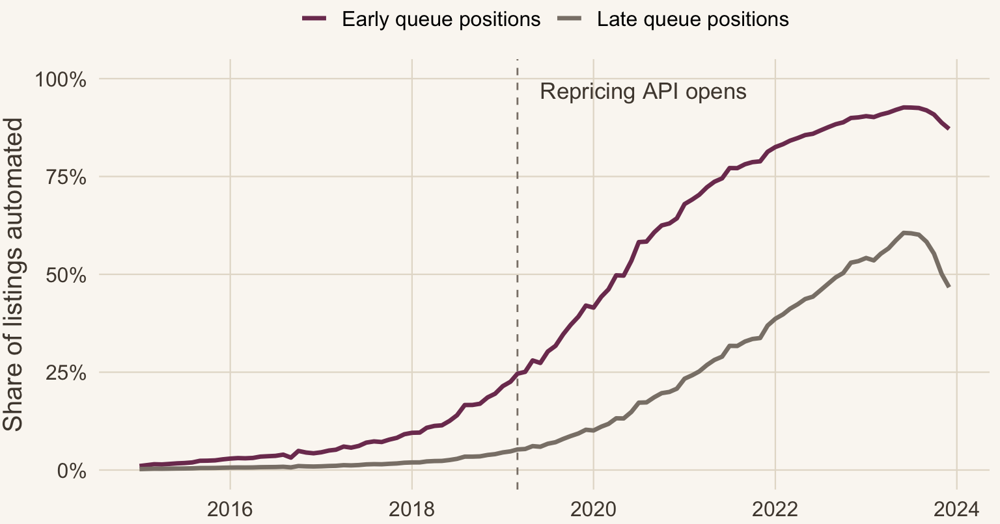

An example seminar deck, generated end to end with Claude Code
September 18, 2026
The policy question is usually posed as whether automation is inflationary. That framing is incomplete: the answer depends on the composition of the market a seller automates into.
Source: PriceScope weekly listing panel, 2015–2023. Own calculations. Online price competition on this kind of marketplace has been measured since Chevalier and Goolsbee (2003).
Delegating price setting cuts the cost of a revision from roughly $14 of seller attention to near zero. Two consequences run in opposite directions.
Which force dominates is a question about the rival mix \(\mathrm{RivalShare}_{mt}\), the share of a market’s listings already under automated pricing, not about automation itself.
Both forces are old; what is new is that they can now run at machine speed. Undercutting is the mechanism Chevalier and Goolsbee (2003) find between two online booksellers, and the variety it is traded against is what Brynjolfsson et al. (2003) price (see also Chevalier and Mayzlin 2006).
Headline estimate Adoption raises a listing’s price by 6.2 log points (s.e. 1.4) in the top quartile of rival exposure, and by −0.4 (1.1) in the bottom quartile.
The two estimates come from the same regression, the same sellers, and the same weeks. The sign of the effect of automation is a property of the market, not of the technology.
Automation is not inflationary on its own. It is inflationary where it is already common.
Rival exposure \(\mathrm{RivalShare}_{mt}\) is the share of other listings in market \(m\) and week \(t\) coded as automated. The full measurement rule is in the appendix.
A queue rollout is a design used elsewhere: Wiles et al. (2025) identify the effect of algorithmic writing assistance the same way, on hires rather than prices.

Figure 1: Adoption of the repricing API, by queue position
Groups are the earliest and latest thirds of the queue, fixed at seller signup. Seller behaviour on this marketplace has mostly been studied through reviews rather than prices (He et al. 2022).
\[ \begin{aligned} \log p_{jmt} = \;& \beta_1 A_{jt} + \beta_2 \bigl(A_{jt} \times \mathrm{RivalShare}_{mt}\bigr) \\[2pt] & + \gamma_j + \delta_{mt} + \varepsilon_{jmt} \end{aligned} \]
Here \(A_{jt} \in \{0,1\}\) marks automation, \(\gamma_j\) absorbs the listing and \(\delta_{mt}\) the market-week, so \(\beta_2\) is identified off variation in \(\mathrm{RivalShare}_{mt}\) across sellers who adopt in different quarters. Standard errors are clustered by market.
Assumption 1 (Parallel trends given exposure) Given rival exposure, adoption timing carries no information about the untreated price path: \[\mathbb{E}\bigl[\Delta \log p_{jmt}(0) \mid A_{jt}, \mathrm{RivalShare}_{mt}\bigr] = \mathbb{E}\bigl[\Delta \log p_{jmt}(0) \mid \mathrm{RivalShare}_{mt}\bigr].\]
| Outcome: log price | Pooled | + Market × week FE | Interaction |
|---|---|---|---|
| Automated pricing | 0.024 | 0.019 | −0.004 |
| (0.008) | (0.009) | (0.011) | |
| Automation × top-quartile rival exposure | 0.066 | ||
| (0.017) | |||
| Market × week fixed effects | No | Yes | Yes |
| Listings | 41,208 | 41,208 | 41,208 |
Pooling across markets averages a positive and a zero effect into a small positive one.

High-exposure markets only. Nothing happens in the four quarters before adoption, the jump lands in the quarter of adoption, and the level persists for a year.
Estimate 0.062 (0.018) four quarters out
Pre-period coefficients are jointly insignificant, \(p = 0.71\).
| Outcome: log price | Baseline | Seller trends | Drop 2020 | Balanced | Continuous exposure | Winsorized | PPML |
|---|---|---|---|---|---|---|---|
| Automation × exposure | 0.066 | 0.061 | 0.070 | 0.064 | 0.058 | 0.063 | 0.069 |
| (0.017) | (0.019) | (0.018) | (0.020) | (0.016) | (0.017) | (0.021) | |
| Automation, level | −0.004 | −0.007 | −0.002 | −0.005 | −0.003 | −0.004 | −0.006 |
| (0.011) | (0.012) | (0.011) | (0.013) | (0.010) | (0.011) | (0.014) | |
| Market × week FE | Yes | Yes | Yes | Yes | Yes | Yes | Yes |
| Listings | 41,208 | 41,208 | 38,940 | 22,517 | 41,208 | 41,208 | 41,208 |
Standard errors clustered by market throughout. The continuous-exposure column reports the effect of a one-standard-deviation move in \(\mathrm{RivalShare}_{mt}\). The empirics-first posture, a robust fact ahead of a model, is the one Golder et al. (2023) argue for. Sensitivity to the sample window is tabulated in the appendix.
Proposition 1 Let \(\pi_j(p_j, p_{-j})\) be log-concave in \(p_j\) and suppose automation lowers the adjustment cost \(\kappa_j\). If \(\partial^2 \pi_j / \partial p_j \partial p_{-j} > 0\), then \(p_j^\star = \mathop{\mathrm{arg\,max}}_p \pi_j(p, p_{-j}) - \kappa_j \mathbf{1}\{p \neq p_{j,t-1}\}\) is increasing in \(p_{-j}\), and adoption decisions are strategic complements.
Proof. Log-concavity gives a unique interior maximizer, so \(p_j^\star\) is characterized by the first-order condition. Falling \(\kappa_j\) widens the region where the constraint \(p = p_{j,t-1}\) does not bind, and on that region the cross-partial signs \(\mathrm{d} p_j^\star / \mathrm{d} p_{-j} > 0\) by Topkis. Adopting therefore raises the marginal return to a rival’s adoption.
The empirical interaction is the comparative static the model predicts, not a specification artifact.
Sellers who automate first may be facing rising demand, which would raise prices with or without the API. Three pieces of evidence bound this.
The one case we cannot rule out is a market-level shock hitting exposure and prices together in the same week. We treat this as an open question. Demand dynamics on platforms of this kind are modelled directly by Yin et al. (2024).
Nothing in the estimate requires a regulator to observe pricing algorithms, which are private, or to prove intent, which is unfalsifiable. It requires the share of a market already automated, which the platform records. Whether firms adopt in the first place is a separate question with its own literature (Dietvorst et al. 2018; Brynjolfsson et al. 2025).
The threshold is where the fitted interaction crosses zero, so it inherits the standard error on the interaction and should be read as a range.
Headline estimate 6.2 log points (s.e. 1.4) in the top quartile of rival exposure, −0.4 (1.1) in the bottom quartile, from the same regression.
A rule that permits automated pricing has no single price effect. Its effect is increasing in how much automation the market already has, which makes market composition the object a regulator should be measuring.
Paper and replication files: example.edu/~presenter/repricing
Comments and objections are equally welcome, in the room or afterwards.
Write to me at you@example.edu
The paper and these slides live at your-site.example
| Sample or specification | Interaction | s.e. | Level effect | Listings | Markets | Pre-trend \(p\) |
|---|---|---|---|---|---|---|
| Baseline, 2015–2023 | 0.066 | 0.017 | −0.004 | 41,208 | 320 | 0.71 |
| Post-API weeks only, 2019–2023 | 0.071 | 0.021 | −0.002 | 33,415 | 320 | 0.64 |
| Drop the 2020 demand spike | 0.070 | 0.018 | −0.002 | 38,940 | 320 | 0.69 |
| Drop the last adoption cohort | 0.061 | 0.023 | −0.006 | 29,884 | 311 | 0.55 |
| Market-specific linear trends | 0.058 | 0.026 | −0.005 | 41,208 | 320 | 0.83 |
Nothing here moves the estimate by more than half a standard error.
Tier eligibility is a valid instrument for own adoption and a weak one for the interaction, because the first stage for \(A_{jt} \times \mathrm{RivalShare}_{mt}\) requires exogenous variation in both arguments at once. The available instrument moves only the first.
The reduced form is reported instead: crossing an eligibility threshold raises price by 0.031 (0.012) in high-exposure markets and 0.002 (0.010) elsewhere, a ratio close to the interaction estimate scaled by the 0.48 first stage.
A two-sample approach using a second platform’s queue is in progress.
The three-distinct-days rule is the middle of three thresholds. Tighter and looser rules move the classified share, but not the estimate.
| Classification rule | Share | Changes per week | Interaction | s.e. | Listings |
|---|---|---|---|---|---|
| Price changes on two or more distinct days | 0.71 | 2.4 | 0.061 | 0.015 | 41,208 |
| Three or more distinct days (baseline) | 0.54 | 3.6 | 0.066 | 0.017 | 41,208 |
| Four or more distinct days | 0.39 | 4.5 | 0.072 | 0.020 | 41,208 |
No listing in the 2015–2018 pre-period crosses the three-day rule for more than two consecutive weeks, which is what makes the threshold usable as a proxy. Imputing the level a listing would have been assigned under an unobserved rule follows Bradlow et al. (2004); richer platform data would allow the transformer approach of Gabel and Ringel (2024) or the multimedia features surveyed in Grewal et al. (2021), and letting a model propose the rule rather than fixing three by hand is the case Ludwig and Mullainathan (2024) make.